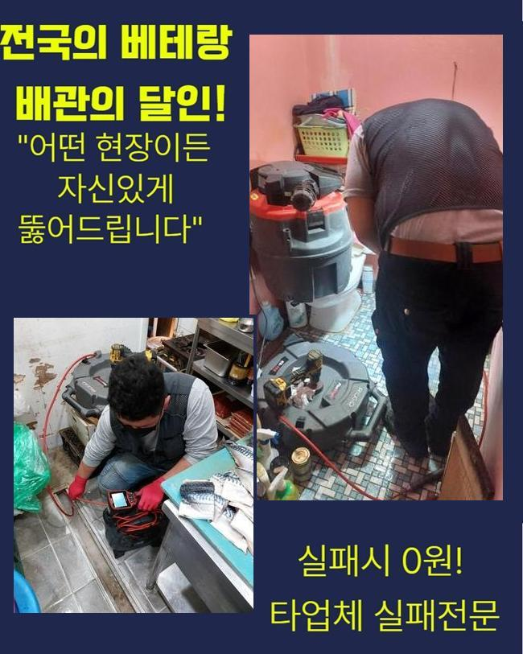
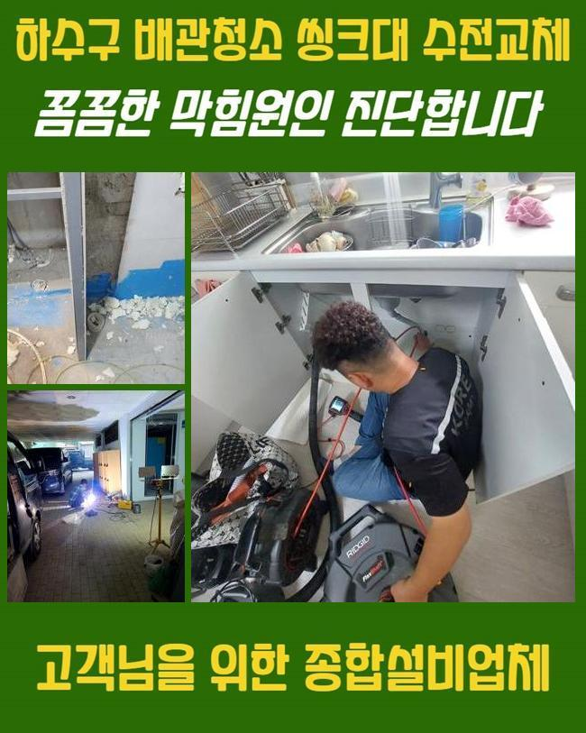
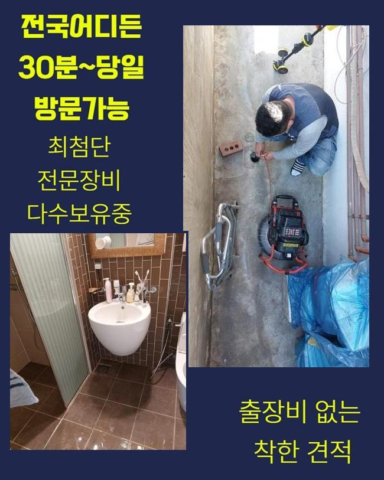
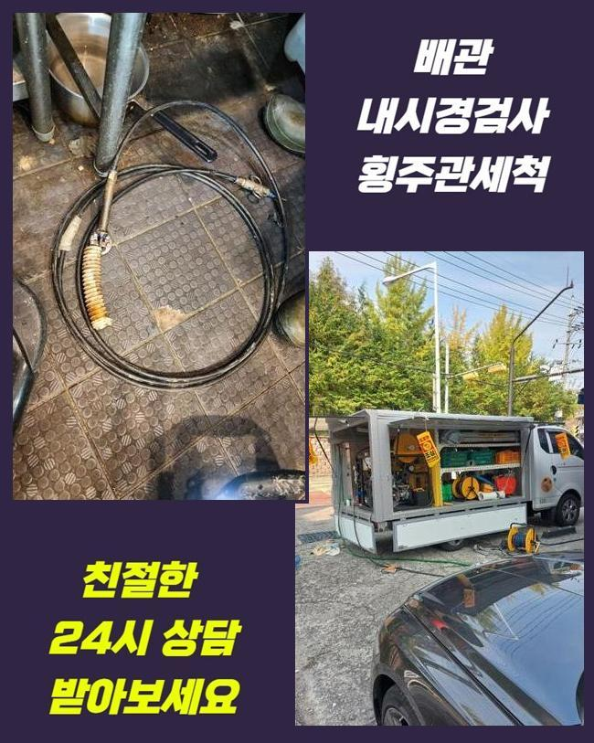
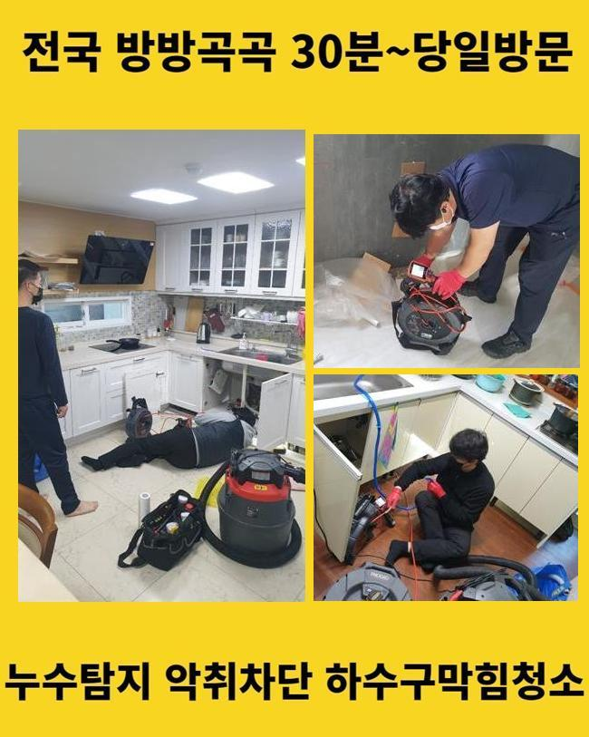
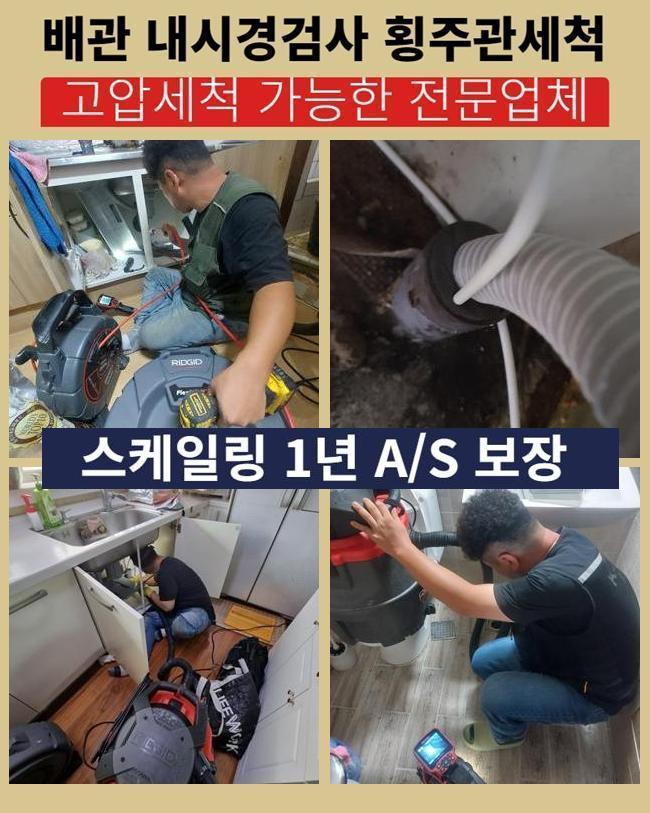

🏠 장곡동대변기역류 도창동 오수맨홀청소 출장설비
용인 싱크대막힘 전문 시공 후기

📋 작업 개요
- 위치: 용인
- 서비스 유형: 싱크대막힘, 변기막힘, 배관막힘, 맨홀막힘, 집수정막힘, 역류해결, 뚫는업체, 배관청소, 고압세척, 악취차단
- 작업 일시: 2024. 11. 21. 15:34
- 업체명: 하수구수사대 (010-5615-2118)
🔍 문제 상황
장곡동대변기역류 도창동 오수맨홀청소 출장설비
급작스레 개수대에서 배관이 막혀서 당황하셨던 적이 있나요?
싱크대안에선 다량의 음식음식음식찌꺼기성분이 적층되기 쉽기때문에 해당하는 막힘상황이 곧잘 벌어질수 있어요
개수대 사용량이 많은 의뢰하시는 때에도 막힘사태가 더더욱 빈번히 나타나죠
어제 근방의 야식집에서 배수문제가 생겨 급하게 방문드렸어요
이번에는 해당하는 시공현장을 통해 배수문제가 나타났을 시 상황과 세정하는 방식을 한층더 정확히 소개해드리겠습니다
분식집을 운영하는 고객께서 조급하게 문의를 하셨는데요
바닥배수공으로 하수가 내려가지 않아 애를 먹고 있다고 하시더라고요
현재 운영중이었기에 조속히 처리해야했고 필요한 도구를 차에 싣고 이동하게 되었죠
현장에 도착한뒤 주방시설을 우선해서 검사하기로 하였죠
싱크대와 바닥쪽에서 정체가 일어나는 모습을 보게되었죠
주방쪽 배수관은 바닥면을 따라서 기다랗게 설치된 상황이었는데 여러문제점이 발견되었습니다
주방의 크기와 구배상태를 진단해보았을때 사용한물이 바닥면 전반에 장시간 잔류하는 상황이었죠
조사과정에서 배수관에서 그리스트랩쪽으로 이어진 방향에서 막힘발생이 된것이 목격되었어요
그리스트랩 부속품은 식당이나 수영장에서 수질관리를 목적으로 놓는것으로 찌꺼기를 걸러서 외부로 유출되지않게 합니다

🔎 원인 분석
💡 전문가 진단: 정밀 진단 장비를 사용하여 슬러지의 고착 여부를 판명하고 타격/세척 작업을 실시했습니다.
그리고 배관에서 나오는 오취와 유해성분을 막고 물높이를 고르게 가져가도록 유도합니다
트러블없이 제대로 쓰려면 일주일에 2회이상 배출구쪽을 청소해주어야 됩니다
트랩부속의 내부에서 배수기능이 망가져버려 제역할이 안되는 상황이었답니다
우선해서 거름망부속을 분리시키고 그리스트랩 안에 펌프설비를 시설하는 공정을 실시하였죠
바닥배관 수세를 시행하기전에 흡입기를 통해서 정체되었던 이물들을 처치하였습니다
그후 하수관 안쪽을 내시경cctv를 넣어서 확인해보았죠
상황을 진단해보니 배수관 하단부에 고착화된 노폐물이 상당히 많았답니다
오래된 석회성분과 얽혀서 물흐름을 지연시키는 바람에 막힌것이었어요
이런 찌꺼기들로 말미암아 배수기능이 저하되고 망가진걸로 여겨졌죠
저희측은 차단된 하수관을 뚫어내기 위하여 샤프트장비를 쓰기로 합니다
플렉스샤프트장비는 쇠사슬과 고속모터가 장착된 배수관전용 분쇄공구로 기계 앞의 체인노커의 빠른 움직임으로 오래 묵은 잔재들을 처리할수 있어요
배수관의 벽부위에 달라붙은 석회물질까지 체인으로 분쇄하면서 관로를 청소해나갔죠
플렉스샤프트를 쓸땐 뚫음과 함께 하수관의 세척까지 된다는 특성이 존재하죠
체인을 조절해서 가동 영역을 맞춰나갈수가 있기 때문에 한층 빠르고 정확하게 공정을 해나갈수 있죠
샤프트기기를 가동할때에 과한 힘으로 돌리면 하수관에 훼손을 가할수 있답니다

🔧 작업 과정
그러면 온전한 하수관도 교환해야하는 상태에 이르게될수 있어서 풍부한 시공경험을 토대로 수행해나가는 것이 중요한 부분이죠
배관의 세정업무를 끝내고 나서는 방수시공까지 단행하였습니다
고장난 설비를 탈거한뒤에 추가적으로 방수마감을 한건데요
이리하여 배수문트랩과 배수관련 장애를 처치할수가 있었답니다
상시로 물을 쓰는 지점에서는 주기적인 청소가 필요합니다
역류나 막힘이 일어나면 일시적 괴로움과 함께 정상운영을 못하는 고초까지 생기기 때문이죠
신규 펌브부속을 시설할땐 정교한 기술이 필요하답니다
혹시 유격이라도 발생한다면 누설되는 문제가 생길수도 있어요
이에 저희측은 집수정으로 물흐름이 완성되게끔 치밀하게 수리하였습니다
그래야 물흐름이 적합하게 이루어지는겁니다
유수분리조의 배관이 막힌다면 굉장히 불편하실텐데 배관 기술자의 점검을 받아보신다면 신속하게 해소하실수 있을겁니다
설치를 끝낸 다음에는 물빠짐이 깔끔하게 되는지 파악하는 공정이 필요합니다
시공을 마무리하고나선 배관카메라로 펌프가 제대로 작동하는지 검사를 진행합니다
이를 통해서 결함발생 확률을 낮추고 부차적인 문제를 예방할수가 있어요
펌프점검이 끝난뒤 트랩덮개를 올리는 공정을 시행했어요
전체적인 업무과정은 체계적으로 실행되어야 별문제를 유발하지 않고 끝마칠수 있죠
노하우가 적은 사람에게 맡긴다면 예견하지 못하였던 상황들이 벌어지기도 하죠
그러하기에 주방쪽 배관이나 욕실에서 배관막힘이 생겼을때 어떤곳에 문의하느냐가 중요하다고 볼수있죠
또 배수공에서 역류증상이 발발했다면 조속히 처치하는게 중요한 부분이죠
전 공정을 끝내고 주변을 정리하던차에 위층에 사시는 분께서 물막힘이 생겼다며 손좀 봐달라고 하셨어요
서둘러서 마무리지은뒤 이동한뒤 배관을 살펴보았죠
해당지점 또한 관로가 막혀있다는 사실을 파악했고 플렉스샤프트를 통해서 소쇄를 단행하였어요
장기간 적체되었던 석회물질과 슬러지들을 신속히 제거했죠
내시경카메라로 청소 상황을 꼼꼼하게 파악했고 관로보존 방법 등을 설명드리고 뚫음을 끝마쳤죠


✅ 작업 완료
저흰 막혀버린 원인을 정확히 알아내고 전용장비를 토대로 문제를 해결해드려요
주방시설물에서 일어나는 정체의 주요 동기는 기름슬러지라고 볼수 있어요
이럴때 딱딱해진 찌꺼기 층을 세정하여야 체증문제가 재발하지 않아요
간단히 통로만 형성하여서는 원하는 목표점에 도달하기 힘겹습니다
동일한 문제점에 봉착하지 않으려고 한다면 배관 기술자의 장비를 토대로 정밀하게 수선하고 근원적인 동기를 발견하여 해결할 필요가 있습니다
저흰 체증이 발발하게 된 동기를 적절한 장비로 알아낸뒤 기기를 선택하고 작업해드려요
숙련된 기술수준과 경험을 통해서 신속히 막힘을 처리해드리니 도움이 필요하다면 의뢰 부탁드립니다




⚠️ 주방 싱크대 배관 막힘 예방 수칙
- ✅ 기름기가 묻은 식기나 프라이팬은 설거지 전 키친타올로 반드시 기름때를 닦아내세요.
- ✅ 주기적으로 싱크대 개수대에 뜨거운 물을 가득 받아 한 번에 내려 배관 내부 기름을 씻어내세요.
- ✅ 배수구 거름망을 미세한 필터로 사용하시고 음식물 찌꺼기가 틈으로 새어 들지 않게 관리하세요.
- ✅ 베이킹소다와 식초를 뜨거운 물과 함께 일주일에 한 번씩 부어주면 배관 살균과 막힘 예방에 좋습니다.
💡 핵심 정리
- 확실한 장비 작업(내시경 점검 및 샤프트 스케일링)으로 원인을 뿌리 뽑습니다.
- 작업 후 1년 이내에 동일한 부위 재발 시 100% 무상 A/S 서비스를 보장합니다.
- 서울 · 경기 · 인천 전 지역에 24시간 언제든 긴급 출동할 수 있도록 항시 대기 중입니다.
❓ 자주 묻는 질문 (FAQ)
🚨 용인 싱크대막힘 문제로 고민이신가요?
정확한 원인 진단과 확실한 시공으로 재발 없는 해결을 약속드립니다.
24시간 긴급 출동 | 서울 · 경기 · 인천 전지역 | 1년 내 재발 시 무상 A/S